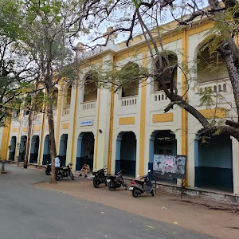
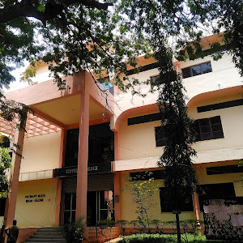

our campus
Hover Over The bellow Blocks TO view The Names

PHYSICS BLOCK

CENTURY BLOCK

Nizam College offers 44 number of
UG & PG courses accourding to the mentioned bellow various courses
Hover Over The bellow Blocks TO view The Names
we provide various number of facilities for the students as bellow

The Nizam College library was established in the year 1986 as a Learning Resource Centre. The facility is ideally and centrally located in the main Library Block of the campus. Even with the Central location of the facility, it has a calm and serene environment, ideal for students and faculty to have a focused approach. The library is computerized with complete automation with New Genlib Software in all operations.

The Nizam College is ahving one of the best basketball court around osmania university's affiliated colleges, It is been developed and improved each month, hence it is one of the best and most perfic courts around other colleges, it is very clean and colored over very nicely that make the students to have the joy of playing.
The Nizam College ic complete and has all the required facilis that
are been needed by the students, and one of the facilities that is
basic and needed by the students is the canteen to have thier meals,
It has various number of meals which are chicken puff, egg puff,
samosa etc.
The drinks are also provided, like mountain dew, sting energy, thums
up, apple feez, water, chai, tea, etc.
These are the comments of our students who are studuying in Nizam College
This is one of the best colleges in Hyderabad, The educational system is so good in it, And every thing is been provided, all the facilities are available.
I Am studying in Nizam College and I really enjoy my time with the other students, it is so great experience to come and study in nizam college.
I am from sudan and one the best things ever happened to me is studying in nizam college and experience this college, and I am enjoying my studying time with my friends so much.